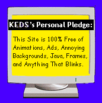

|  |
We work directly with missions to help them generate well-documented, permanent data archives. We provide data to NASA-sponsored researchers upon request, along with expert assistance in using the data. Our focus is mainly on serving the planetary science community, but we also provide some support for the general user interested in geoscience data. The Geosciences Node is part of the Earth and Planetary Remote Sensing Laboratory at Washington University in St. Related Sites See these links to related sites for more information about planetary missions and data products. |